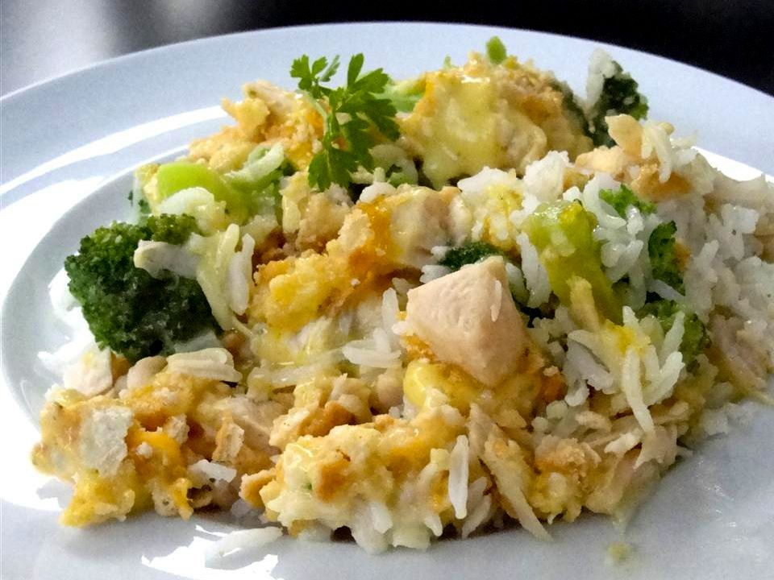

Chicken Divan

Chicken divan is a vintage casserole dish infused with a deep, earthy flavor from the curry sauce and topped with a rich crust of baked cheddar cheese. Best served with rice, this recipe is made with broccoli but any vegetable can be easily substituted with delicious results. Follow the step by step instructions below to recreate this fantastic family meal!
Ingredients:
- A whole chicken, boiled
- 1.5lbs of broccoli, or your green vegetable of choice
- 3 10.5 oz cans of cream of mushroom soup
- 1 lemon
- 4 cups of grated cheddar cheese
- Salt and pepper to taste
- Curry powder
Steps:
- Preheat your oven to 350°
- Put your boiled whole chicken in your casserole dish of choice. Shred with a fork and discard the bones as you go. Don't shred too finely! You want your pieces to be about 1/2 an inch in width.
- Add your broccoli to the casserole with the boiled chicken. Spread evenly.
- In a bowl, mix your cream of mushroom soup, juice from half a lemon, and 1/8 cup of curry powder. You should have a bright yellow, tangy sauce. The curry flavor should be strong. Add salt and pepper to taste.
- Pour the sauce over your shredded chicken and broccoli. Spread evenly but do not mix.
- Take your shredded cheddar cheese and generously spread it overtop your casserole.
- Bake until the cheese is browned.
- Enjoy! Best served hot over rice.